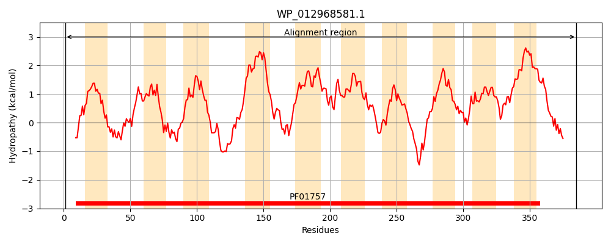
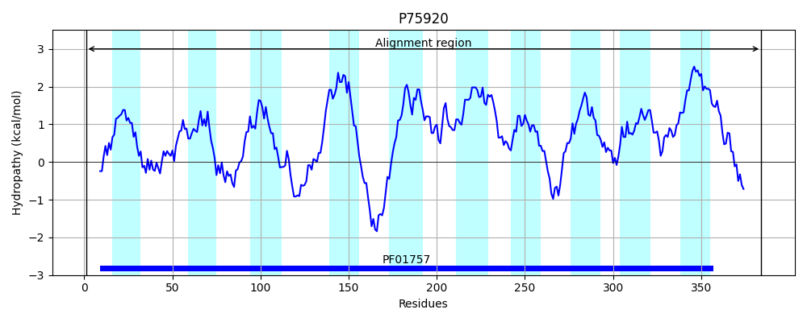
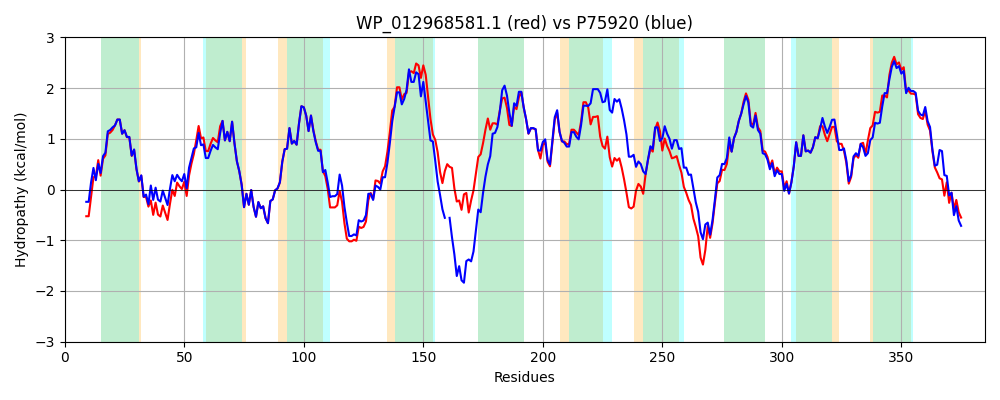

Hit Accession: P75920
Hit TCID: 9.B.97.7.1
Hit Description: gnl|BL_ORD_ID|11425 gnl|TC-DB|P75920|9.B.97.7.1 Glucans biosynthesis protein C OS=Escherichia coli (strain K12) GN=mdoC PE=1 SV=1
Mach Len: 385
e:0.000000
Query TMS Count : 10
Hit TMS Count: 10
TMS-Overlap Score: 8.400000
Predicted Substrates:None
BLAST Alignment:
Score: 1556 , Bit scores: 603 bits, E-value: 0.0e+00, Alignment length: 385, Percentage identity: 77
Query: 1 MNNTPVQREYFFDSIRAWLMLLGIPFHISLIYSSHSWHVNSAEPSWWLTLFNDFIHAFRMQVFFVISGYFSYMLFLRYPLKKWWKVRVERVGIPMLTAIPLLTLPQFIMLQYVNGKAENWHTLSMYDKFNTLAWELISHLWFLLVLVVLTSLGVVLFKWLTRRPAGHGLAFSDTVTMGQLTMIFLALGVFYALIRRSLFLLYPPLLSNGLFNFVVMQTLFYLPFFVLGAQTFINPRLKTMFTTPSPWCCAAALLGFIAYRLNQQYGSGDGWMYETESVITMVLGLWMVNVVFSLGHRLLNFQSARVTYFVNASLFIYLVHHPLTLLYGAWITPAIKSNTLGFIVGLVFVVGIALILYEIHLRIPLLRFLFSGKPMNKPAKTPASA 385
MN P QREYF DSIRAWLMLLGIPFHISLIYSSH+WHVNSAE S WLTLFNDFIH+FRMQVFFVISGYFSYMLFLRYPLKKWWKVRVERVGIPMLTAIPLLTLPQFIMLQYV GKAE+W LS+YDK+NTLAWELISHLWFLLVLVV+T+L V +FK + R + + +M +L++IFL LG+ YA+IRR++F++YPP+LSNG+FNF+VMQTLFYLPFF+LGA FI P LK +FTTPS C AA L F+AY LNQ+YGSGD WMYETESVITMVLGLWMVNVVFS GHRLLNFQSARVTYFVNASLFIYLVHHPLTL +GA+ITP I SN LGF+ GL+FVVGIA+ILYEIHLRIPLL+FLFSGKP+ K A A
Sbjct: 1 MNPVPAQREYFLDSIRAWLMLLGIPFHISLIYSSHTWHVNSAESSLWLTLFNDFIHSFRMQVFFVISGYFSYMLFLRYPLKKWWKVRVERVGIPMLTAIPLLTLPQFIMLQYVKGKAESWPGLSLYDKYNTLAWELISHLWFLLVLVVMTTLCVWIFKRI-RNNLENSDKTNKKFSMVKLSVIFLCLGIGYAVIRRTIFIVYPPILSNGMFNFIVMQTLFYLPFFILGALAFIFPHLKALFTTPSRGCTLAAALAFVAYLLNQRYGSGDAWMYETESVITMVLGLWMVNVVFSFGHRLLNFQSARVTYFVNASLFIYLVHHPLTLFFGAYITPHITSNWLGFLCGLIFVVGIAIILYEIHLRIPLLKFLFSGKPVVKRENDKAPA 384 | Protein Hydropathy Plots: |
|---|
|  |  |
Pairwise Alignment-Hydropathy Plot:
|
|---|
|  |